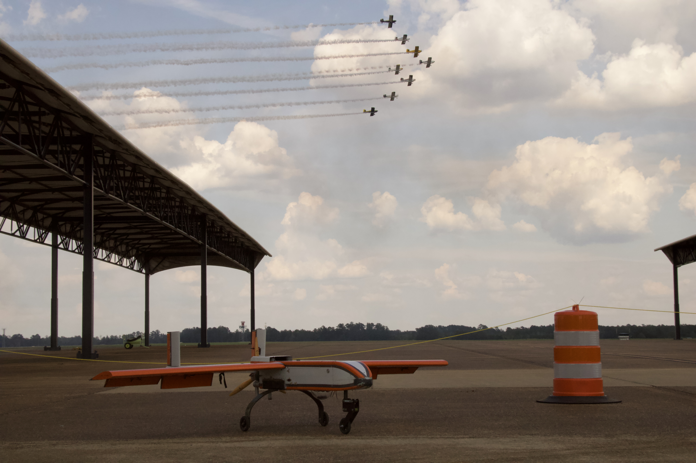
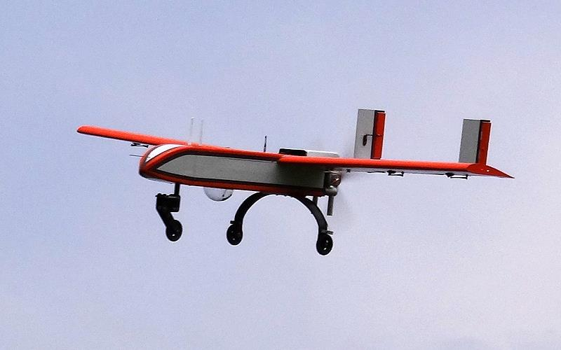

Overview
Contributed to the Xipiter Unmanned Aerial Systems Design Team by developing and refining the aircraft CAD model in SolidWorks. Focused on clean geometry, assembly fit, and rapid iteration to support integration of avionics, flight control hardware, and software driven system layout. Assisted with composite manufacturing through hands on carbon fiber layups to support airframe fabrication and testing. Worked as a team to translate requirements into practical design changes, improving manufacturability and readiness for testing.
Photos
Design


Build and Integration



My Role
- Directed structural airframe design in SolidWorks to optimize internal components for reliable iterations and flight control system integration
- Enabled mission execution by supporting development and integration of Python based guidance, navigation, and control software
- Ensured precision integration of carbon fiber composite components by supporting hands on fabrication and maintaining tight interface control
Tools Used
SolidWorks Python Avionics Integration Flight GN&C Composite Manufacturing Team LeadKey Results
- Delivered a structurally optimized UAS airframe that enabled clean integration of avionics and flight control systems
- Supported successful execution of the competition mission profile through software aware airframe layout and integration
- Produced a flight ready composite airframe by contributing to carbon fiber layups and ensuring precise fit between composite and internal structures